Filmes
Categoria: Ação
1
UMA BATALHA APÓS A OUTRA
✯

 25 de setembro de 2025 | 2h
40min
25 de setembro de 2025 | 2h
40min
 7.7
7.7
 95
95
 94%
94%
A história acompanha Bob, um ex-revolucionário que precisa reunir
seus antigos companheiros para resgatar sua filha adolescente, Willa, que
foi sequestrada por um militar extremista.
2
CÓDIGO PRETO

14 de março de 2025 | 1h 34min
6.7
85
96%
A trama segue os agentes de inteligência George Woodhouse e sua
esposa Kathryn. O casamento deles é posto à prova quando um traidor rouba um
poderoso artefato tecnológico, e George precisa investigar a própria esposa
para descobrir se ela vazou informações sigilosas.
3
Predador: Assassino de Assassinos
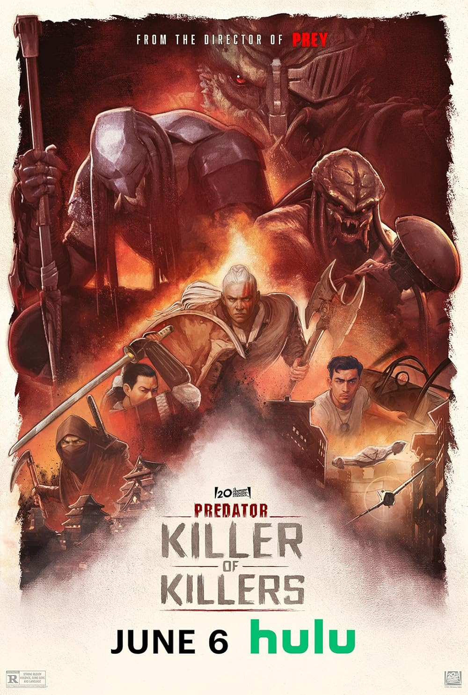
06 de junho de 2025 | 1h 25min
6.8
59
75%
O filme explora três histórias em diferentes períodos históricos,
onde os melhores guerreiros da humanidade — incluindo vikings, samurais e
pilotos da Segunda Guerra Mundial — são caçados pelas criaturas mais mortais
do universo.
4
KPOP: DEMON HUNTERS

20 de junho de 2025 | 1h
35min
7.4
77
91%
A animação acompanha o trio Rumi, Mira e Zoey, integrantes do famoso
grupo fictício HUNTR/X. Elas levam uma vida dupla: de dia, são grandes
estrelas da música; à noite, atuam como guardiãs secretas, caçando demônios
para proteger seus fãs. A situação se complica quando uma misteriosa boyband
rival, surge com planos de roubar a energia de seus admiradores.
5
SISU: ESTRADA DA VINGANÇA

23 de dezembro de 2025 | 1h
29min
6.8
76
93%
A história acompanha o sobrevivente de guerra Aatami, que retorna à
sua casa
abandonada para desmontá-la e reconstruí-la em um local seguro como
homenagem à sua família assassinada. No entanto, o comandante soviético
responsável pelas mortes o encontra, iniciando uma violenta caçada pelo
país.
Categoria: Terror
1
PECADORES
✯

17 de abril de 2025 | 2h 17min
7.5
84
97%
Dois irmãos gêmeos retornam ao Mississippi em 1932 para recomeçar a
vida e abrir um clube de
blues. Além de enfrentarem o racismo, traumas do passado e a ameaça de
extremistas locais, eles se deparam com uma aterrorizante força sobrenatural
sedenta por sangue.
2
A HORA DO MAL
07 de agosto de 2025 | 2h 09min
7.4
81
93%
Na trama, 17 das 18 crianças de uma mesma turma desaparecem
misteriosamente de suas casas na mesma noite, exatamente às 2h17 da
madrugada. O único aluno que não foge é Alex, o que leva a cidade e a mídia
a voltarem suas suspeitas e exigirem respostas da professora da classe.
3
FAÇA ELA VOLTAR
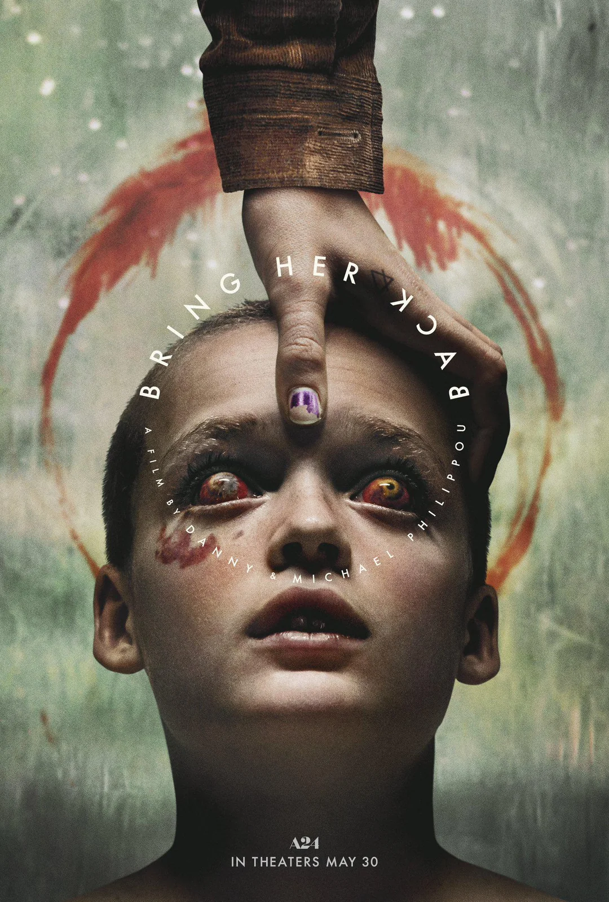
21 de agosto de 2025 | 1h 39min
7.1
75
89%
A trama acompanha os meio-irmãos Andy e Piper que, após uma
fatalidade envolvendo o pai, são colocados no sistema de assistência social.
Eles acabam sendo adotados por Laura, uma mãe enlutada e conselheira
pedagógica. Ao se mudarem para a casa isolada da nova guardiã, os irmãos
descobrem segredos perturbadores.
4
A MEIA-IRMÃ FEIA
23 de outubro de 2025 | 1h
28min
7.0
70
96%
A trama acompanha Elvira, a meia-irmã mais velha da doce e
deslumbrante Agnes. Em um reino onde a beleza e o status social são leis, a
mãe de Elvira a submete a procedimentos cirúrgicos extremos para que ela
conquiste o coração do príncipe e garanta a sobrevivência financeira da
família. A obsessão por perfeição leva a protagonista a uma espiral insana
de dor e automutilação
5
JUNTOS
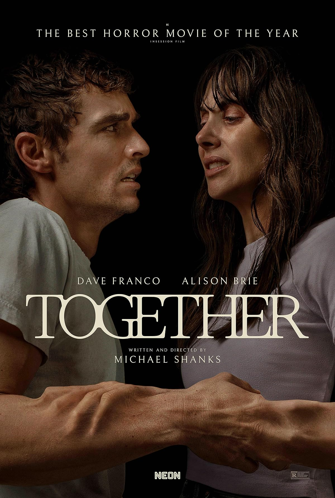
14 de agosto de 2025 | 1h 42min
6.7
75
73%
O filme acompanha Tim e Millie, um casal em crise que decide se
mudar para uma área isolada no campo em busca de um recomeço. Durante uma
caminhada, eles se deparam com uma força sobrenatural misteriosa e
aterrorizante que os une fisicamente, grudando seus corpos. O que era uma
crise conjugal se transforma em um pesadelo sobrenatural.
Categoria: Drama
1
UMA BATALHA APÓS A OUTRA
✯
25 de setembro de 2025 | 2h
40min
7.7
95
94%
A história acompanha Bob, um ex-revolucionário que precisa reunir
seus antigos companheiros para resgatar sua filha adolescente, Willa, que
foi sequestrada por um militar extremista.
2
PECADORES
✯
17 de abril de 2025 | 2h 17min
7.5
84
97%
Dois irmãos gêmeos retornam ao Mississippi em 1932 para recomeçar a
vida e abrir um clube de
blues. Além de enfrentarem o racismo, traumas do passado e a ameaça de
extremistas locais, eles se deparam com uma aterrorizante força sobrenatural
sedenta por sangue.
3
HAMNET: A VIDA ANTES DE HAMLET
✯
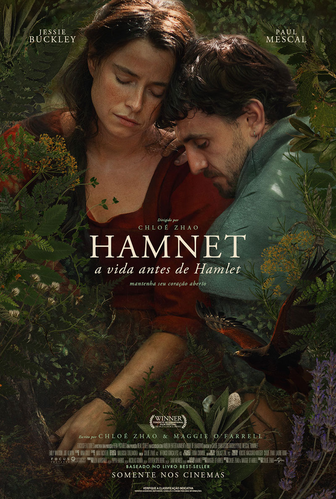
29 de janeiro de 2026 | 2h
05min
7.8
84
87%
Ambientado na Inglaterra do século XVI, o filme acompanha a vida de
Agnes (esposa de William Shakespeare). A trama explora a história de amor do
casal e o impacto devastador da morte de seu filho de 11 anos, Hamnet,
vítima de uma praga.
4
VALOR SENTIMENTAL
✯
25 de dezembro de 2025 | 2h 14min
42min
7.7
86
95%
O filme acompanha duas irmãs, Nora e Agnes, que lidam com o luto
após a morte da mãe e com o retorno de seu pai distante, Gustav — um
cineasta carismático e egocêntrico que tenta retomar o contato enquanto
prepara seu novo filme.
5
FAMÍLIA DE ALUGUEL
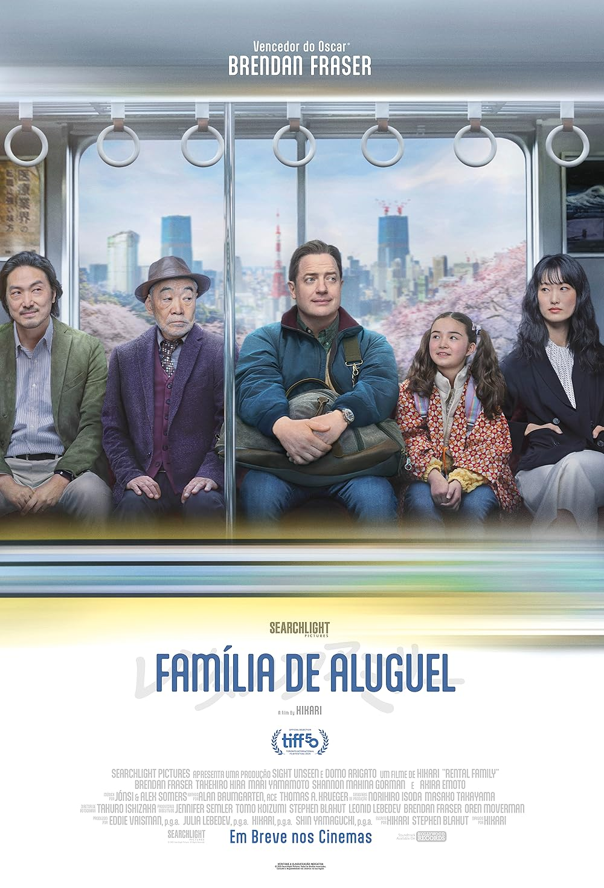
08 de janeiro de 2026 | 1h 43min
39min
7.6
64
88%
Um ator busca um novo sentido para a vida. Ele consegue um trabalho
incomum em uma agência japonesa de "famílias de aluguel", onde é contratado
para assumir papéis substitutos para clientes desconhecidos. À medida que
mergulha nessas vidas, ele cria laços genuínos, lidando com conflitos morais
e descobrindo o real valor da conexão humana.
Categoria: Romance
1
A BALADA DA ILHA WALLIS
✯
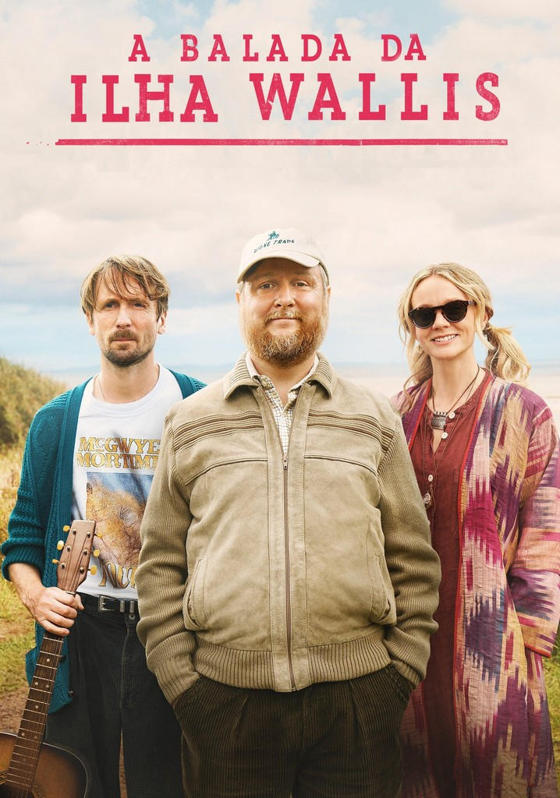
02 de julho de 2025 | 1h 40min
7.4
78
97%
É uma comédia dramática britânica que acompanha Charles, um
excêntrico ganhador da loteria que vive isolado em uma ilha remota. Seu
sonho de reunir sua antiga dupla folk favorita se torna realidade quando ele
contrata Herb e Nell para um show privado, forçando o conturbado ex-casal a
lidar com velhas tensões.
2
Bridget Jones: Louca pelo Garoto
13 de fevereiro de 2025 | 2h
05min
6.5
72
88%
Anos após a morte de seu namorado em uma missão humanitária no
Sudão, Bridget Jones se vê com 51 anos, presa em um limbo emocional e
lidando com a rotina de mãe solteira de Billy e Mabel. Com a ajuda de amigos
fiéis e de seu antigo ex-namorado, ela tenta voltar ao mercado de trabalho e
ao mundo dos encontros amorosos.
3
HAMNET: A VIDA ANTES DE HAMLET
✯
29 de janeiro de 2026 | 2h
05min
7.8
84
87%
Ambientado na Inglaterra do século XVI, o filme acompanha a vida de
Agnes (esposa de William Shakespeare). A trama explora a história de amor do
casal e o impacto devastador da morte de seu filho de 11 anos, Hamnet,
vítima de uma praga.
4
VALOR SENTIMENTAL
✯
25 de dezembro de 2025 | 2h 14min
42min
7.7
86
95%
O filme acompanha duas irmãs, Nora e Agnes, que lidam com o luto
após a morte da mãe e com o retorno de seu pai distante, Gustav — um
cineasta carismático e egocêntrico que tenta retomar o contato enquanto
prepara seu novo filme.
5
Amores Materialistas
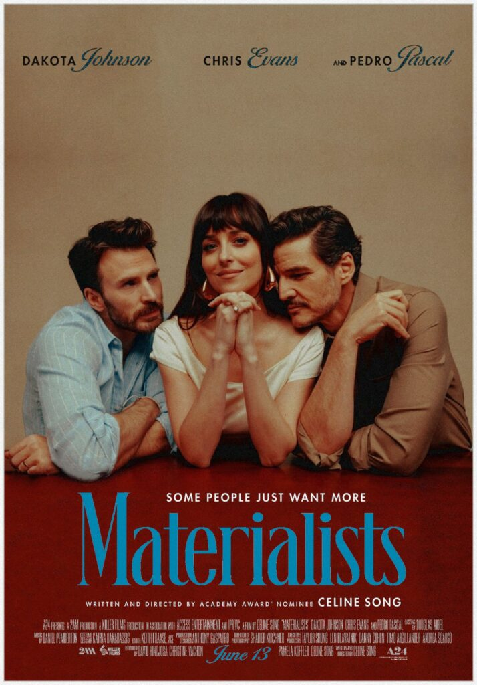
31 de julho de 2025 | 1h 30min
6.2
70
78%
O filme acompanha Lucy, uma casamenteira de Nova York que se vê em um
triângulo amoroso. Ela fica dividida entre seu ex-namorado imperfeito, John,
um garçom e aspirante a ator, e Harry, um empresário rico e bem-sucedido.
Categoria: Comédia
1
A BALADA DA ILHA WALLIS
✯
02 de julho de 2025 | 1h 40min
7.4
78
97%
É uma comédia dramática britânica que acompanha Charles, um
excêntrico ganhador da loteria que vive isolado em uma ilha remota. Seu
sonho de reunir sua antiga dupla folk favorita se torna realidade quando ele
contrata Herb e Nell para um show privado, forçando o conturbado ex-casal a
lidar com velhas tensões.
2
Twinless: Um Gêmeo a Menos
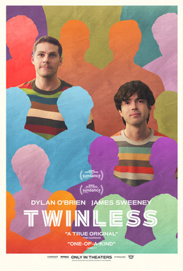
21 de agosto de 2025 | 1h 40min
7.3
79
97%
A trama acompanha Roman, que, após a morte de seu irmão gêmeo, passa
a frequentar um grupo de apoio a pessoas que perderam suas outras metades.
Lá, ele conhece Dennis, outro jovem marcado pela mesma perda. Eles
desenvolvem uma amizade complexa, marcada por humor negro e tensão, mas a
chegada de uma colega de trabalho revela que nem tudo é o que parece ser.
3
UM DIA DAQUELES
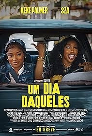
03 de abril de 2025 | 1h 37min
6.5
73
94%
As melhores amigas e colegas de quarto Dreux e Alyssa descobrem que
o namorado de Alyssa gastou todo o dinheiro do aluguel. Para evitar o
despejo iminente, a dupla embarca em uma corrida caótica contra o relógio,
enfrentando situações extremas para salvar o apartamento e manter a amizade
intacta.
4
SISTER MIDNIGHT
24
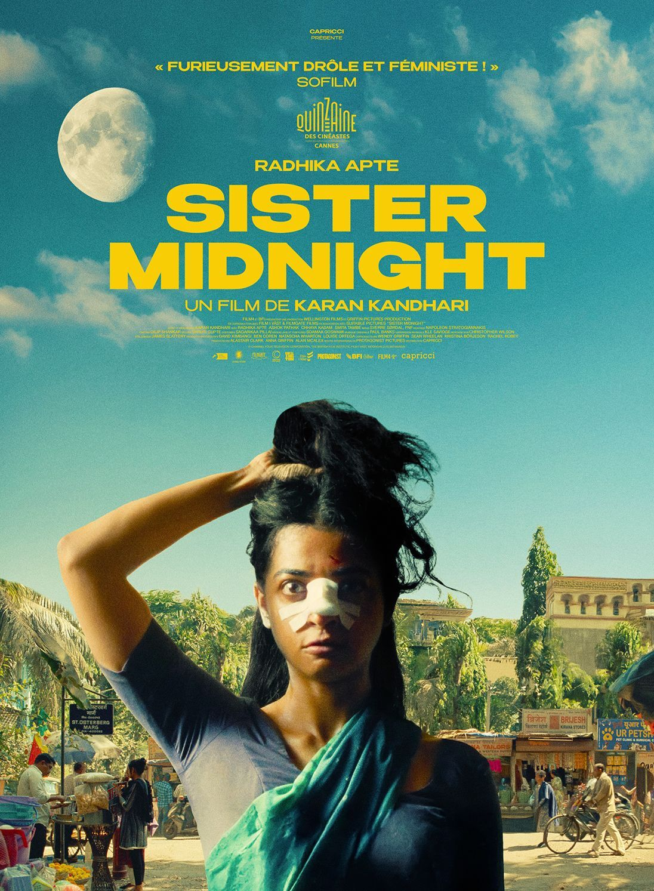
2024 | 1h 47min
5.7
75
98%
Após um casamento arranjado em Mumbai, Uma descobre uma sede por
sangue. Fugindo da repressão e do tédio conjugal, ela se transforma em uma
figura implacável e sobrenatural.
5
AMIZADE TÓXICA
24
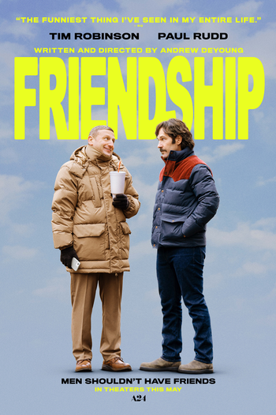
2024 | 1h 40min
6.6
72
88%
Acompanha Craig, um pai suburbano que tenta equilibrar o emprego e o
casamento, mas sua vida vira de cabeça para baixo quando ele desenvolve uma
obsessão por fazer amizade com seu novo e charmoso vizinho, Austin. Suas
tentativas desesperadas e desajeitadas de forçar a conexão criam um
desconforto cômico e ameaçam arruinar a vida de ambos.